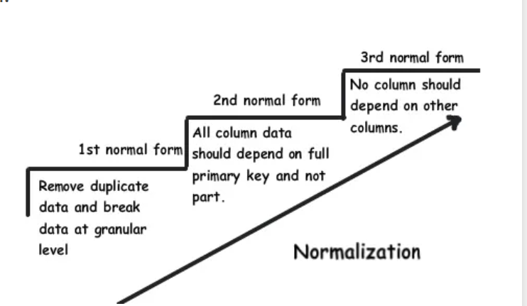
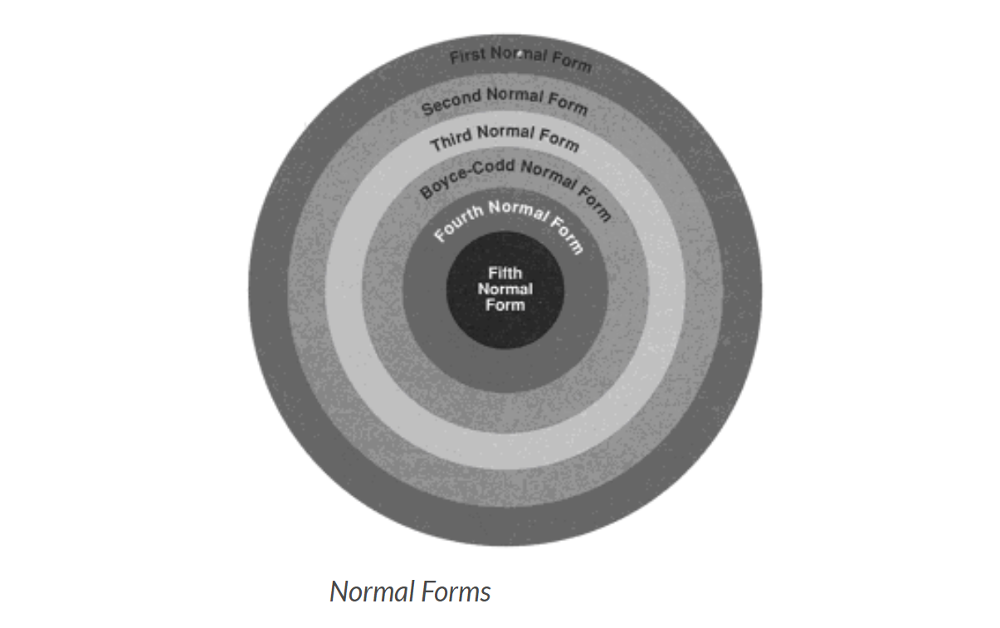

Database Normalization is organizing non structured data in to structured data.Database normalization is nothing but organizing the tables and columns of the tables in such way that it should reduce the data redundancy and complexity of data and improves the integrity of data.
Database Normalization is nothing but technique of designing the database in structured way to reduce redundancy and improve data integrity.
Database Normalization is used for following Purpose:
To Eliminate the redundant or useless data
To Reduce the complexity of the data
To Ensure the relationship between tables as well as data in the tables
To Ensure data dependencies and data is logically stored.
Need Of Database Normalization:
If your database objects are not in structured or normalized way it is difficult to update the database without facing the database loss.Insertion,Updation and deletion are very frequent if data is not normalized.Normalization is part of successful database design.Without Database normalization the database system can be slow,Inaccurate and inefficient.
Real Life Example of data which is not normalized:
Lets take Example of Employee Table:
Employee ID
Employee Name
City
Department
101
Amit
Kolhapur
OBIEE,COGNOS
102
Divya
Indore
COGNOS
103
Yodhini
Hydrabad
SIEBEL
104
Amit
Kolhapur
ETL
If new employee joined company and he or she has not alloted to department.Hence We need to insert nulll value there which leads to insertion Anamoly.
Deletion Anamoly:
If Employee_id 101 has only 1 department and we delete that temparary then Entire student record will be deleted.
To Overcome these kind of issues there is need to use the database normalized forms.When we try to normalize database check following 4 important points:
1.Arrangement of data into logical groups.
2.Minimize the Duplicate data.
3.Organize the data in such way that when modification needed then there should be only one place modification required.
4.User can access and manipulate data quickly and efficiently.
Database Normalization Forms:
There are following Four Normal Forms used in Database Normalization:

1.First Normal Form
2.Second Normal Form
3.Third Normal Form
4. Boyce-code Normal Form(BCNF)
1.First Normal Form/1st Normal Form:
The first normal form is the normal form of database where data must not contain repeating groups.The database is in First normal form If,
1.It contains only automic values.
Automic values:- The Single cell have only single value
2.Each Record needs to be unique and there are no repeating groups.
Repeating Groups:- Repeating group means a table contains 2 or more values of columns that are closely related.
Example:
Consider following table which is not normalized:
Employee Table:
Employee No
Employee Name
Department
1
Amit
OBIEE,ETL
2
Divya
COGNOS
3
Rama
Administrator
To bring it in to first normal form We need to split table into 2 tables.
First table:Employee Table
Employee No
Employee Name
1
Amit
2
Divya
3
Rama
Second Table: Department table
Employee No
Department
1
OBIEE
1
ETL
2
COGNOS
3
Administrator
We have divided the table into two different tables and the column of each table is holding the automic values and duplicates also removed.
2.Second Normal Form/2nd Normal Form:
The data is said to be in second normalized form If,
1.It is in First normal form
2.There should not be any partial dependency of any column on primary key.Means the table have concatanated primary key and each attribute in table depends on that concatanated primary key.
3.All Non-key attributes are fully functionally dependent on primary key.If primary is is not composite key then all non key attributes are fully functionally dependent on primary key.
Example:
Let us consider following table which is in first normal form:
Employee No
Department No
Employee Name
Department
1
101
Amit
OBIEE
2
102
Divya
COGNOS
3
101
Rama
OBIEE
In above example we can see that department .Here We will see that there is composit key as{ Employee No,Department No}.Employee No is dependent on Employee Name and Department is dependent on Department No.We can split the above table into 2 different tables:
Table 1:Employee_NO table
Employee No
Department No
Employee Name
1
101
Amit
2
102
Divya
3
101
Rama
Table 2:Department table
Department No
Department
101
OBIEE
102
COGNOS
Now we have simplified the table in to second normal form where each entity of table is functionally dependent on primary key.

Third Normal Form/3rd Normal Form:
The database is in Third normal form if it satisfies following conditions:
1.It is in Second normal form
2.There is no transitive functional dependency
Transitive Dependency:
When table 1 is Functionally dependent on table 2. and table 2 is functionally dependent on table 3 then.table 3 is transitively dependent on table 1 via table 2.
Example:
Consider following table:
Employee No
Salary Slip No
Employee Name
Salary
1
0001
Amit
50000
2
0002
Divya
40000
3
0003
Rama
57000
In above table Employee No determines the Salary Slip No.And Salary Slip no Determines Employee name.Therefore Employee No determines Employee Name.We have transitive functional dependency so that this structure not satisfying Third Normal Form.
For That we will Split tables into following 2 tables:
Employee table:
Employee No
Salary Slip No
Employee Name
1
0001
Amit
2
0002
Divya
3
0003
Rama
Salary Table:
Salary Slip No
Salary
0001
50000
0002
40000
0003
57000
Following are 2 Advantages of 3rd normal form:
1.Amount of data duplication is removed because transitive dependency is removed in third normal form.
2.Achieved Data integrity
4.BCNF(Boyce-Codd Normal Form)
BCNF Normal form is higher version of third normal form.This form is used to handle analomies which are not handled in third normal form.BCNF does not allow dependencies between attributes that belongs to candidate keys.It drops restriction of the non key attributes from third normal form.
Third normal form and BCNF are not same if following conditions are true:
1.The table has 2 or more candidate keys
2.At least two of candidate keys are composed of more than 1 attribute
3.The keys are not disjoint.
Example:
Address-> {City,Street,Zip}
Key 1-> {City,Zip}
Key 2->{City,Street}
No non key attribute hence this example is of 3 NF.
{City,Street}->{zip}
{Zip}->{City}
There is dependency between attributes belonging to key.Hence this is BCNF.